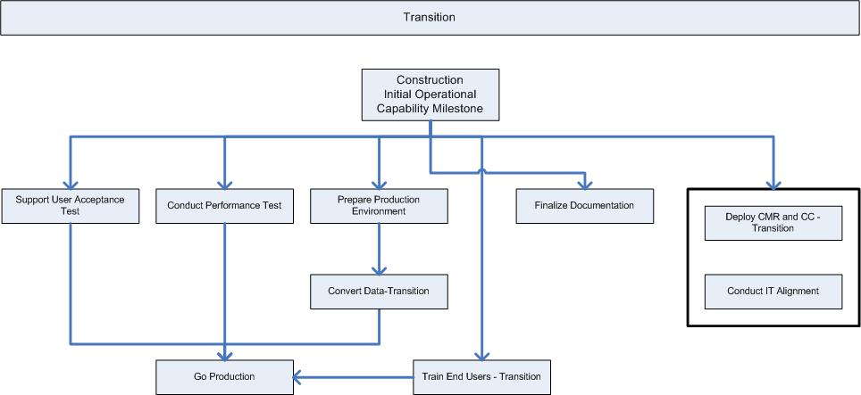

OUM |
Phase Overview |
||
Method Navigation |
Current Page Navigation |
||
|
|
||||||||
The goal of the Transition phase is to take the completed solution from installation onto the production system through the Acceptance Test to launch of the live application, open and ready for business. Validate that the system is tested systematically and is available for end users. During this phase, the new system is accepted by the customer organization, the organization is made ready for the new system, and the system is put into production and, if the new system replaces an old one, a smooth cutover to the new application is provided. The system has been found acceptable to operate in the user environment, but it may not be perfect. Minor enhancements may be developed and released after production starts. Also, planning is performed for the development of any remaining functionality, in a new increment.
The Transition phase can span several iterations, and includes testing the new system in preparation for release, and making minor adjustments based on user feedback. At this point in the lifecycle, user feedback should focus mainly on fine-tuning the product, configuration, installation, and usability issues. All the major structural issues should have been resolved earlier in the project lifecycle.
The Transition phase finishes with the System in Production Milestone. Review and be familiar with the objectives of this milestone before you begin this phase and make sure you have met these objectives before you move to the Production phase.
 This phase overview is written from the perspective of a Full Method View, utilizing ALL of the processes, activities and tasks in this phase. Therefore, all of the following sections provide comprehensive information. If your project is utilizing a tailored approach (for example, Technology Full Lifecycle View, Application Implementation View, Middleware Architecture View), not everything in this overview may be appropriate for your project. Please keep this in mind, especially when reviewing the Prerequisites, Processes, Key Work Products, Tasks and Work Products and Task Dependencies sections. You should use OUM as a guideline for performing all types of information technology projects, but keep in mind that every project is different and that you need to adjust project activities according to each situation. Do not hesitate to add, remove, or rearrange tasks, but be sure to reflect these changes in your estimates and risk management planning. You should also consider the depth to which you address and complete each task based on the characteristics of your particular project or project increment. See Oracle's Full Lifecycle Method for Deploying Oracle-Based Business Solutions for further information on the scalability and adaptability of OUM.
This phase overview is written from the perspective of a Full Method View, utilizing ALL of the processes, activities and tasks in this phase. Therefore, all of the following sections provide comprehensive information. If your project is utilizing a tailored approach (for example, Technology Full Lifecycle View, Application Implementation View, Middleware Architecture View), not everything in this overview may be appropriate for your project. Please keep this in mind, especially when reviewing the Prerequisites, Processes, Key Work Products, Tasks and Work Products and Task Dependencies sections. You should use OUM as a guideline for performing all types of information technology projects, but keep in mind that every project is different and that you need to adjust project activities according to each situation. Do not hesitate to add, remove, or rearrange tasks, but be sure to reflect these changes in your estimates and risk management planning. You should also consider the depth to which you address and complete each task based on the characteristics of your particular project or project increment. See Oracle's Full Lifecycle Method for Deploying Oracle-Based Business Solutions for further information on the scalability and adaptability of OUM.
The following is a list of the objectives of this phase:
The Transition Phase / System in Production (SP) Milestone Checklist is available to assist with determination of completeness for this phase.
The following processes are active in this phase:
Refer to Key Work Products for a complete list of key work products in OUM.
This section discusses the primary techniques that may be helpful in conducting the Transition phase. It also includes advice and commentary on each process.
During this phase, the development team supports the Acceptance Test as executed by the users. Typically, the version that goes into the Acceptance Test is called a beta version of the system. It is often that different users are involved in this testing compared to those that were involved during the project. However, it is important that the users that perform the Acceptance Test have been kept in the loop throughout the project, so that they are familiar with the system and know the decisions and choices that were made. This prevents the users from questioning the actual solution that has been agreed upon during earlier reviews during the project. The Acceptance Test Criteria should have been agreed upon at the start of the project, and will be part of the contract. You should motivate the customer to create test cases and scenarios to use in the Acceptance Test, including the expected outcomes. Preferably this should start in the earlier phases. Hopefully, this process will help uncover any discrepancies in understanding between the developer and customer organizations. It also helps picture what kind of expectations the users have for the various parts of the system, and provides some unexpected clarifications. Therefore, the earlier they start making these scenarios, the better, as the earlier discrepancies are discovered, the easier they can be corrected. Preferably, the Acceptance Test should be performed with actual converted data.
During the Transition phase, you perform the actual Performance Test. The Performance Test is an iterative task, and may become quite labor-intensive and time-consuming when there are strict performance requirements. You need to tune the application, and may even need to rewrite code to fulfill the requirements. Therefore, it is important to have a focus on performance during the development of the components (also, see the Construction phase). If there are complex scenarios, you should consider using tools that are especially made for Performance Testing.
Acceptance and validation of converted data is every bit as important as validating software. Usually data that is converted at the start of a new system is done by specialized software that ceases to be part of the ongoing system. Because this software mostly has no ongoing value, it often is not subject to the same quality standards as other system software components. The earlier you discuss and resolve data conversion issues, the earlier you can introduce converted data into the Testing process.
Review the Data Acquisition, Conversion and Data Quality Strategy (CV.020) created in the Elaboration phase. Agree to convert only data that will have an ongoing value to the business. Data fields in legacy systems often change meaning over time (without markers to indicate a change in use). This makes it difficult to automatically convert data without manual intervention, or data cleansing. It is difficult to estimate the extent of data cleansing needed until the Elaboration phase is complete, and sometimes not even until one iteration has been completed in the Construction phase (also, see the Construction phase).
In this phase, continue to convert the data. Test the correctness of converted data first, before making it available for use. Providing converted data with errors can cause problems that outweigh the benefits of providing early test data. If you have to convert data from legacy systems that include data where the data structure is very different from the data structure in new system, or that the old legacy data is difficult to understand, you probably will need to convert using an iterative process, where users with a good knowledge the old system are involved in verifying the data and testing the conversion programs.
During the Transition phase, minor revisions or changes to the software system may cause updates to any or all of the documentation work products.
Ongoing throughout the project, change and communication events targeted to specific audiences with the goal of mitigating identified risks and challenges are conducted. In addition, during Transition an IT Alignment is conducted and the HR Transition Plan prepared during Construction is implemented.
During Transition, you continue conducting user learning events.
A good maintenance and production environment planning task eases the system rollout. This task is technical in nature and typically involves the transfer of the operation of the new system from the project to the customer operations and maintenance staff. As the system is developed through a number of iterations, the project team already has experience in making components ready and installing them in some environment.
To take the new system into production is the single biggest decision that is made on a project. It can either be made with confidence or a "hope for the best" attitude. See the Construction phase for discussions on various approaches for going into production. A main goal of OUM is to provide a proven process for making this decision easily and confidently.
If you are using a Scrum approach, use the Managing an OUM Project using Scrum technique. You can also go directly to the Transition phase Scrum guidance within this technique.
This phase includes the following tasks:
| ID | Task | Work Product |
|---|---|---|
Testing |
||
TE.105 |
Prepare Users for Testing | Prepared Users for Testing |
TE.110 |
Prepare Acceptance Test Environment | Acceptance Test Environment |
TE.120 |
Support Acceptance Test | Acceptance Test Results |
Performance Management |
||
PT.100 |
Execute Performance Test | Performance Test Results |
PT.110 |
Create Performance Test Report | Performance Test Report |
Data Acquisition and Conversion |
||
CV.064.2 |
Install Conversion Components (Initial Load) | Installed Conversion Components (Initial Load) |
CV.065.2 |
Convert and Verify Data (Initial Load) | Converted and Verified Data (Initial Load) |
CV.068.2 |
Clean Data | Clean Legacy Data |
Documentation |
||
DO.110 |
Finalize Documentation | Final Documentation Work Products |
Organizational Change Management |
||
OCM.150.4 |
Conduct Change Management Roadmap and Communication Campaign | Change Management Roadmap and Communication Events |
OCM.155.3 |
Monitor Change Management Roadmap and Communication Campaign Effectiveness | Change Management Roadmap and Communication Campaign Effectiveness Assessment |
OCM.220 |
Prepare Assessment of Impact on IT Groups | IT Alignment Diagnosis Grid |
OCM.230 |
Prepare IT Transition Plan | IT Transition Plan |
Training |
TR.100.2 |
Conduct User Learning Events | Skilled Users |
Transition |
||
TS.050 |
Prepare Production Environment | Production Environment |
TS.052 |
Implement Production Support Infrastructure | Production Support Infrastructure |
TS.054 |
Perform Pre-Upgrade Steps | Pre-Upgrade Checklist |
TS.055 |
Upgrade Production Environment | Upgraded Production Environment |
TS.056 |
Perform Post-Upgrade Steps | Post-Upgrade Checklist |
TS.057 |
Revise Application Setups | Configured Applications |
TS.058 |
Verify Production Readiness | Production-Ready System |
TS.060 |
Go Production | System In Production |
TS.070 |
Shut Down Legacy System | Legacy System Shut Down |

The most likely areas of risk in the Transition phase are the following:
These factors have been shown to be critical to the success of this phase:

Copyright © 2006, 2016, Oracle and/or its affiliates. All rights reserved.